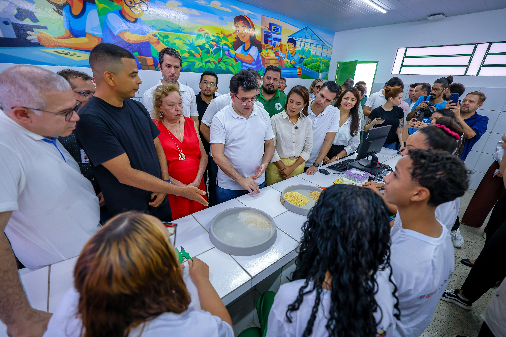
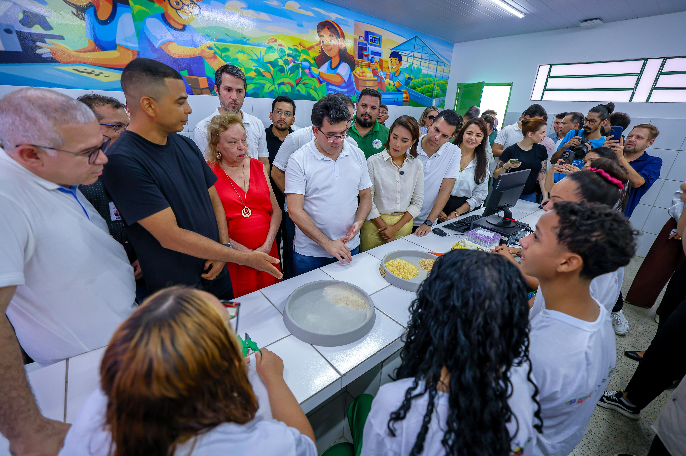

História da Escola
O CETI Francisco Luís de Moraes nasceu com um sonho: levar educação de qualidade a jovens e adolescentes, acreditando no poder transformador do conhecimento. No início, enfrentou muitos desafios: recursos limitados, falta de estrutura e obstáculos que poderiam ter desanimado qualquer instituição. Mas a determinação de professores, alunos e toda a comunidade escolar fez a diferença. Com esforço e dedicação, a escola foi se fortalecendo, conquistando cada vez mais confiança e reconhecimento. Cada dificuldade se tornou aprendizado, cada obstáculo, motivação para crescer. Hoje, o CETI é referência em educação pública, reconhecido não apenas na cidade, mas em diversas regiões, inspirando outras escolas e sendo exemplo de compromisso com o desenvolvimento humano. Mais do que ensinar conteúdos, o CETI Francisco Luís de Moraes forma cidadãos preparados para a vida, incentivando cada aluno a acreditar em seu potencial e a construir seus próprios sonhos. Uma escola que, mesmo depois de superar tantas dificuldades, prova todos os dias que com dedicação, união e propósito, é possível transformar vidas e construir futuros.

Foto do antigo prédio (Google Maps)
Foto atual da escola (iPhone 11)


 
